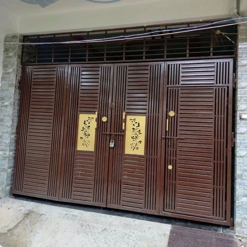
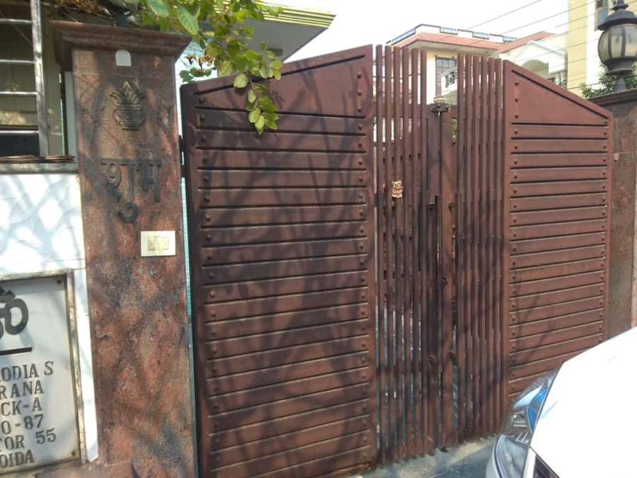
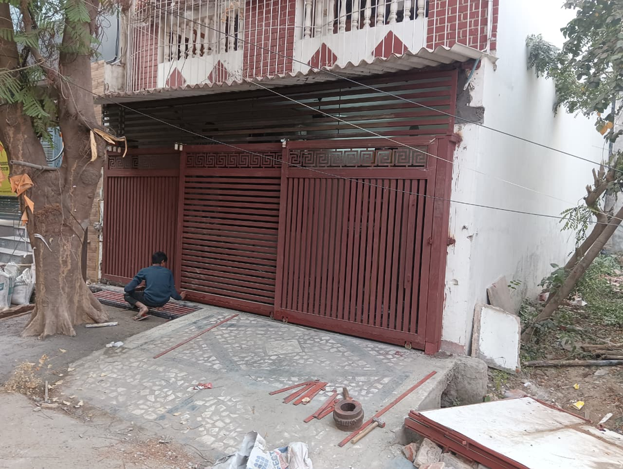
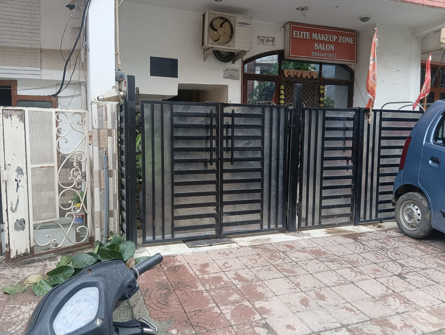
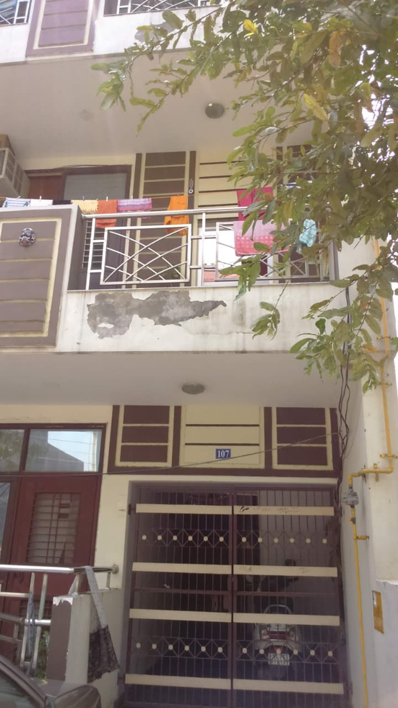

MS Iron Main Gates
Heavy‑duty MS iron main gates with classic styles, affordable strength, and long‑lasting security — perfect for traditional houses, boundary walls, and industrial spaces.









Benefits of Our Iron Main Gates
- Heavy‑duty MS iron frames for maximum strength
- Protective coatings to resist rust and weather damage
- Classic, timeless designs for traditional and industrial spaces
- Expert welding for secure and durable joints
- On‑site measurement for perfect fitting
- Affordable pricing with long‑lasting security
Get a Free Quote
Fair pricing based on size, material and design. Call now for on‑site measurement.
📞 Call: 9810776115 💬 WhatsApp UsService Areas
Indirapuram (Shakti Khand, Niti Khand, Gyan Khand, Nyay Khand, Ahinsa Khand), Vaishali, Noida, Rail Vihar & nearby areas.
Frequently Asked Questions
How long does fabrication take?
Most iron main gates take 2–5 days depending on size and design.
Do you provide on‑site measurement?
Yes, we visit your location before fabrication to ensure perfect fitting.
Can I customize the design?
Yes, all iron main gates can be customized in size, pattern, material and finishing.
Do you offer installation?
Yes, installation is included with every order.